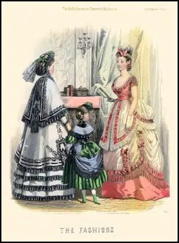
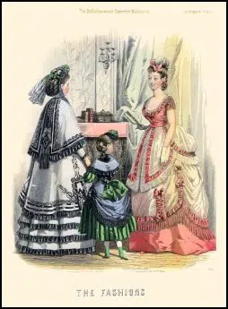

The Rise of Elegance: Victorian Fashion Flourishes
The Victorian era, spanning from 1837 to 1901 during Queen Victoria’s reign, marked a period of strict social codes, industrial growth, and rapidly changing fashion. Unlike Renaissance fashion, which was lavish and symbolic of royalty, Victorian fashion emphasized modesty, structure, and propriety. This era saw the rise of the middle class, and clothing became an indicator of morality, gender roles, and respectability.

👗 Why Clothing Was Important
Unlike the expressive and artful attire of earlier periods, Victorian clothing reflected morality, gender roles, and social order.The Industrial Revolution, which made clothing more affordable and accessible
It was also influenced by:
New inventions like the sewing machine, which sped up garment production
The rise of department stores and fashion magazines
Strict societal expectations — especially for women, who were expected to dress modestly Clothing reinforced Victorian values such as modesty, restraint, and class hierarchy.
What They Wore ✨
Victorian fashion was intricate, layered, and dictated by social norms.
Some key features included:
Women: Corsets, crinolines, hoop skirts, bustles, and high-necked blouses
Men: Tailcoats, waistcoats (vests), top hats, and trousers
Accessories: Gloves, parasols, bonnets for women; pocket watches and canes for men
Dresses changed shapes over the decades — from bell-shaped skirts to bustled backs
Dark, rich colors in winter; lighter fabrics and lace in summer

Example Clothes
 



🪡 How Clothing Is Made Today
The Victorian age brought innovation to fashion manufacturing:
Sewing machines revolutionized tailoring and home dressmaking
Paper sewing patterns (e.g., by Butterick) allowed people to sew at home
Ready-to-wear clothing emerged due to factory production
Dressmakers, milliners, and tailors specialized in high society garments
Corsets were made with whale bone or steel to cinch waists
Embellishments like lace, ribbon, and beading were hand-applied for upper-class clientele
👑 Examples of Victorian Fashion
Queen Victoria of England
A defining figure of the era, Queen Victoria shaped fashion trends across Europe.
Known for:
Wearing a white wedding dress, which popularized the modern bridal gown
Emphasizing modesty and dignity in dress
Influencing widespread use of mourning attire (black lace, veils, and jet jewelry)

🧵 Notable Victorian Fashion Designers & Influencers
Charles Frederick Worth
Known for:📖 Founding the House of Worth in Paris, which dressed royalty and the elite
Creating custom gowns with labels — a new concept in fashion
Introducing seasonal fashion collections and live model presentations